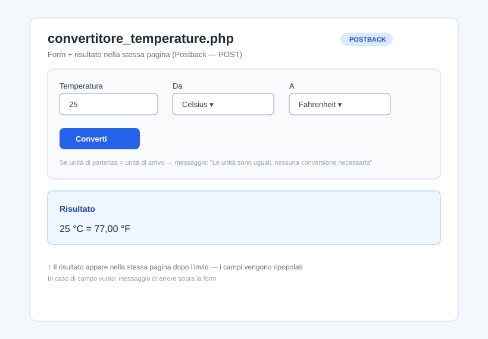
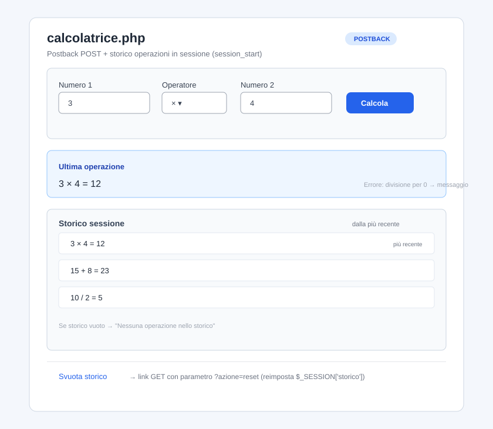
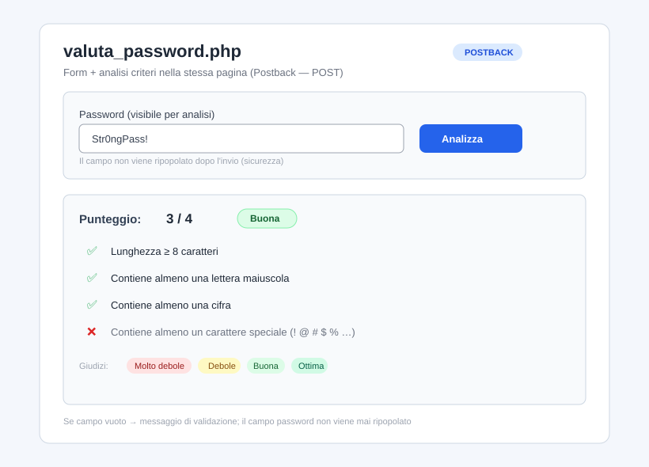
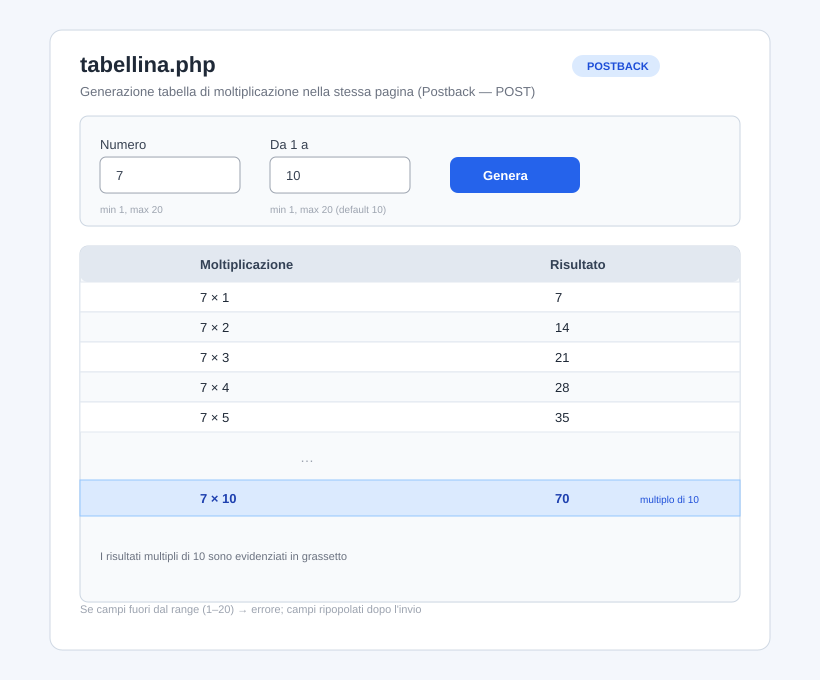
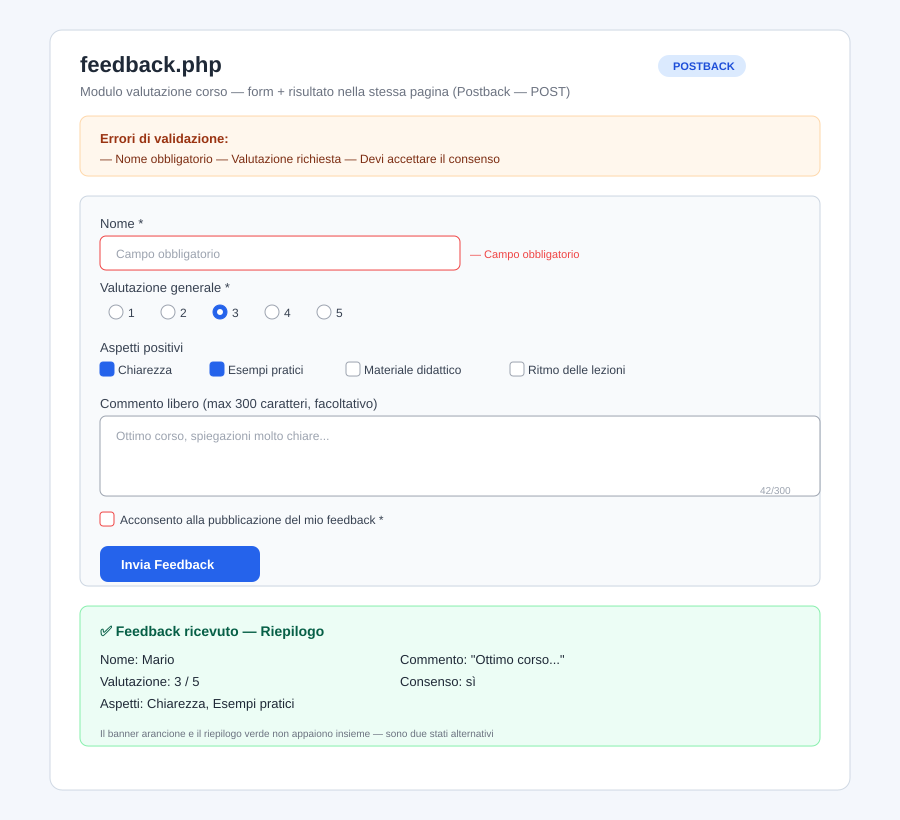
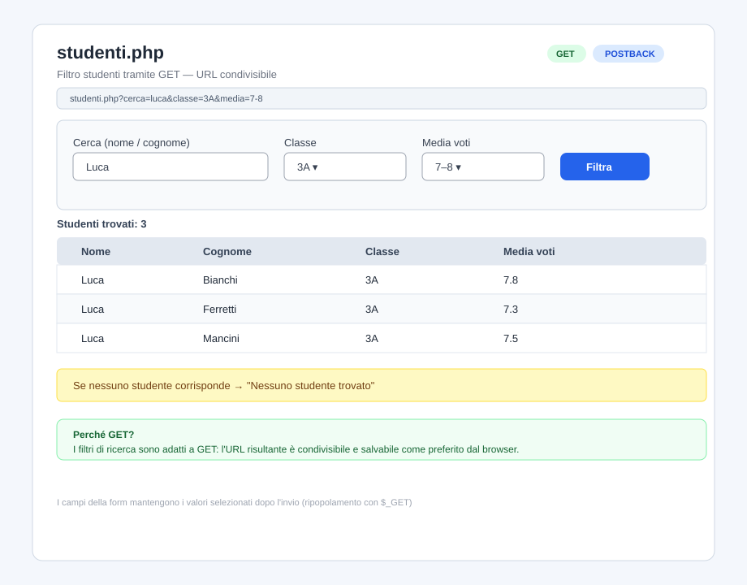
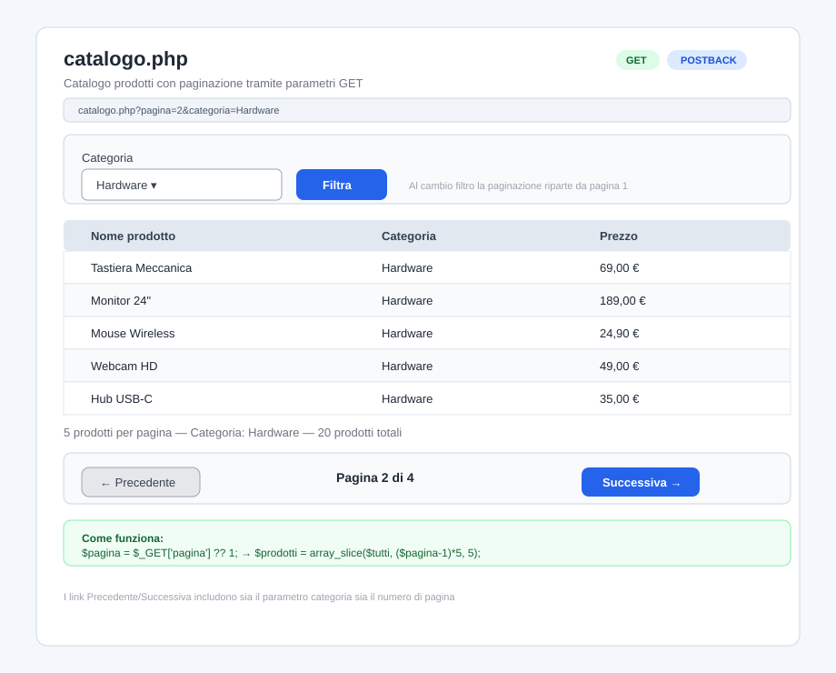
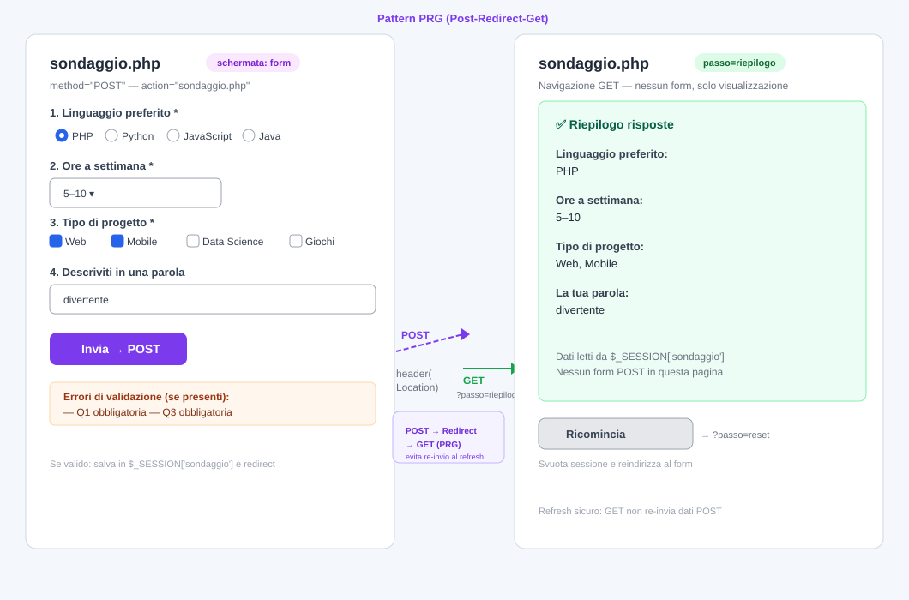
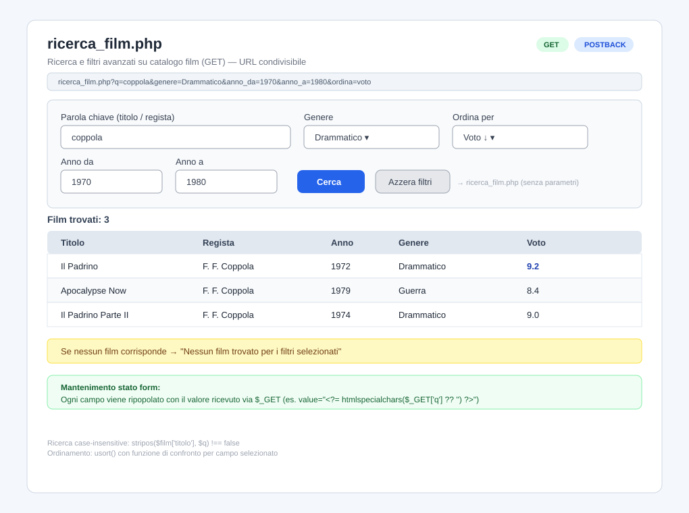

GET da quelli del metodo POSTisset/empty per rilevare l'invio del form<!DOCTYPE html><html lang="it"><meta charset="UTF-8"><meta name="viewport" content="width=device-width, initial-scale=1.0">| Caratteristica | GET | POST |
|---|---|---|
| Dati visibili nell'URL | ✅ Sì | ❌ No |
| Adatto per ricerche/filtri | ✅ Sì | ❌ No |
| Adatto per dati sensibili | ❌ No | ✅ Sì |
| Risultato condivisibile via URL | ✅ Sì | ❌ No |
| Modifiche di stato (es. salvataggio) | ❌ No | ✅ Sì |
<?php
$risultato = null;
$errori = [];
if ($_SERVER['REQUEST_METHOD'] === 'POST') {
// 1. Recupera i dati
$valore = trim($_POST['campo'] ?? '');
// 2. Valida
if (empty($valore)) {
$errori[] = 'Il campo è obbligatorio.';
}
// 3. Elabora solo se non ci sono errori
if (empty($errori)) {
$risultato = /* calcolo */;
}
}
?>
<!-- HTML con form e risultato condizionale -->
Livello: ⭐ Principiante
Metodo: POST | Pagine: 1 (postback)
Argomenti: postback base, conversione numerica, output condizionale
Scenario:
Crea una pagina unica convertitore_temperature.php che converte una temperatura tra Celsius, Fahrenheit e Kelvin.
Consegna:
1. In convertitore_temperature.php, crea una form POST che punta alla stessa pagina con:
- campo numerico temperatura
- select da (unità di partenza: Celsius, Fahrenheit, Kelvin)
- select a (unità di destinazione: Celsius, Fahrenheit, Kelvin)
- pulsante Converti
2. Quando il form viene inviato:
- valida che il campo temperatura non sia vuoto;
- esegui la conversione con le formule corrette;
- mostra il risultato nella stessa pagina, sotto la form.
3. Se le unità di partenza e di arrivo sono uguali, mostra un messaggio: Le unità sono uguali, nessuna conversione necessaria.
4. Ripopola i campi con i valori inseriti dopo l'invio.
Rendering atteso (esempio):

Formule di riferimento:
- °C → °F: (C × 9/5) + 32
- °C → K: C + 273.15
- °F → °C: (F − 32) × 5/9
- °F → K: (F − 32) × 5/9 + 273.15
- K → °C: K − 273.15
- K → °F: (K − 273.15) × 9/5 + 32
Livello: ⭐⭐ Intermedio
Metodo: POST | Pagine: 1 (postback)
Argomenti: postback, array in sessione, storico operazioni
Scenario:
Crea una pagina unica calcolatrice.php che esegue operazioni e mostra uno storico degli ultimi calcoli effettuati nella sessione.
Consegna:
1. Avvia la sessione con session_start() in cima al file.
2. Crea una form POST con:
- numero1 (number)
- operatore (select: +, -, *, /)
- numero2 (number)
- pulsante Calcola
3. Quando il form viene inviato:
- valida i campi;
- gestisci la divisione per zero con messaggio dedicato;
- salva ogni operazione riuscita in $_SESSION['storico'] come stringa (es. 3 + 4 = 7);
- mostra il risultato dell'ultima operazione.
4. Mostra sotto la form lo storico di tutte le operazioni della sessione, dalla più recente all'ultima.
5. Aggiungi un link Svuota storico che reimposta la variabile di sessione tramite GET con parametro azione=reset.
Rendering atteso (esempio):

Livello: ⭐⭐ Intermedio
Metodo: POST | Pagine: 1 (postback)
Argomenti: validazione avanzata, feedback visuale, condizioni multiple
Scenario:
Crea una pagina unica valuta_password.php che analizza la forza di una password inserita dall'utente.
Criteri di valutazione:
- 1 punto: lunghezza ≥ 8 caratteri
- 1 punto: contiene almeno una lettera maiuscola
- 1 punto: contiene almeno una cifra
- 1 punto: contiene almeno un carattere speciale (!, @, #, $, %, ecc.)
Consegna:
1. Crea una form POST con un campo password (type text per rendere visibile l'input) e pulsante Analizza.
2. Quando il form viene inviato:
- calcola il punteggio in base ai criteri;
- mostra il punteggio ottenuto su 4;
- mostra per ogni criterio se è soddisfatto (✅) o no (❌);
- assegna un giudizio: Molto debole (0–1), Debole (2), Buona (3), Ottima (4).
3. Non ripopolare il campo password dopo l'invio (per sicurezza).
4. Mostra un messaggio di validazione se il campo è vuoto.
Rendering atteso (esempio):

Livello: ⭐⭐ Intermedio
Metodo: POST | Pagine: 1 (postback)
Argomenti: cicli, tabelle HTML, output condizionale
Scenario:
Crea una pagina unica tabellina.php che genera la tabella di moltiplicazione per un numero scelto dall'utente.
Consegna:
1. Crea una form POST con:
- numero (number, min 1, max 20)
- fino_a (number, min 1, max 20, default 10: il moltiplicatore massimo)
- pulsante Genera
2. Quando il form viene inviato:
- valida che entrambi i campi siano compilati e nei range;
- genera una tabella HTML con la tabellina: numero × 1 = ..., numero × 2 = ..., ecc.;
- evidenzia in grassetto i risultati che sono multipli di 10.
3. Ripopola i campi con i valori inseriti dopo l'invio.
4. Se i campi non sono nel range, mostra un messaggio di errore adeguato.
Rendering atteso (esempio):

Livello: ⭐⭐ Intermedio
Metodo: POST | Pagine: 1 (postback)
Argomenti: validazione form complessa, checkbox, radio, textarea
Scenario:
Crea una pagina unica feedback.php con un form di valutazione di un corso.
Campi richiesti:
1. Nome (text, obbligatorio)
2. Valutazione generale (radio: 1–5 stelle, obbligatorio)
3. Aspetti positivi (checkbox multipla: Chiarezza, Esempi pratici, Materiale didattico, Ritmo delle lezioni)
4. Commento libero (textarea, facoltativo, max 300 caratteri)
5. Consenso alla pubblicazione del feedback (checkbox, obbligatorio)
Consegna:
1. Crea la form POST verso la stessa pagina.
2. Quando il form viene inviato:
- valida nome, valutazione e consenso (obbligatori);
- controlla che il commento non superi i 300 caratteri;
- se valido, mostra un riepilogo del feedback ricevuto nella stessa pagina.
3. In caso di errori, mostra l'elenco degli errori in cima alla pagina.
4. Mantieni i valori selezionati nella form dopo ogni invio (ripopolamento).
Rendering atteso (esempio):

Livello: ⭐⭐ Intermedio
Metodo: GET | Pagine: 1 (postback)
Argomenti: GET, parametri URL, filtro array, mantenimento stato
Scenario:
Crea una pagina unica studenti.php che visualizza e filtra un elenco di studenti.
Dataset (array in PHP):
Almeno 10 studenti, ciascuno con:
- nome
- cognome
- classe (es. 3A, 3B, 4A)
- media voti (float)
Consegna:
1. Crea una form GET verso la stessa pagina con:
- input testuale cerca (ricerca per nome o cognome)
- select classe con opzione Tutte + classi disponibili
- select media con opzioni: Tutte, < 6, 6–7, 7–8, > 8
- pulsante Filtra
2. Filtra gli studenti in base ai parametri ricevuti via GET.
3. Mostra la tabella degli studenti filtrati.
4. Mostra il numero di studenti trovati sopra la tabella.
5. Mantieni i valori nei campi della form dopo l'invio.
6. Se nessuno studente corrisponde, mostra Nessuno studente trovato.
Perché GET? I filtri di ricerca sono adatti a GET perché l'URL risultante è condivisibile e il browser può salvarlo nei preferiti.
Rendering atteso (esempio):

Livello: ⭐⭐⭐ Avanzato
Metodo: GET | Pagine: 1 (postback)
Argomenti: GET, paginazione, slice array, navigazione pagine
Scenario:
Crea una pagina unica catalogo.php che visualizza un catalogo di prodotti con paginazione tramite parametri GET.
Dataset (array in PHP):
Almeno 20 prodotti, ciascuno con:
- nome
- categoria
- prezzo
Consegna:
1. Definisci il numero di prodotti per pagina (es. 5).
2. Leggi il parametro pagina dalla query string ($_GET['pagina']), con default 1.
3. Calcola i prodotti da mostrare con array_slice().
4. Mostra i prodotti della pagina corrente in una tabella.
5. Mostra la navigazione: link ← Precedente e Successiva → dove applicabile.
6. Mostra indicazione della pagina corrente (es. Pagina 2 di 4).
7. Aggiunge una form GET con select per filtrare per categoria; il filtro deve coesistere con la paginazione (al cambio filtro, la pagina torna a 1).
Rendering atteso (esempio):

Livello: ⭐⭐⭐ Avanzato
Metodo: POST per invio, GET per navigazione
Argomenti: uso appropriato di GET/POST, sessioni, riepilogo
Scenario:
Crea un sondaggio a domande multiple con riepilogo finale. Tutte le pagine sono incluse in sondaggio.php.
Domande del sondaggio (hardcoded):
1. Qual è il tuo linguaggio di programmazione preferito? (radio: PHP, Python, JavaScript, Java)
2. Quante ore a settimana studi programmazione? (select: < 2, 2–5, 5–10, > 10)
3. Che tipo di progetto ti interessa di più? (checkbox: Web, Mobile, Data Science, Giochi)
4. Descrivi in una parola il tuo rapporto con il codice. (text)
Consegna:
1. Avvia la sessione.
2. Il parametro passo (via GET) controlla quale schermata mostrare: form, riepilogo, reset.
3. Quando il form viene inviato con POST:
- valida le risposte (tutte obbligatorie tranne il testo libero);
- salva le risposte in $_SESSION['sondaggio'];
- reindirizza a sondaggio.php?passo=riepilogo con header('Location: ...').
4. Nella schermata riepilogo, mostra tutte le risposte in formato leggibile.
5. Aggiungi link Ricomincia che punta a sondaggio.php?passo=reset; questo svuota la sessione e reindirizza al form.
Perché questo schema? Dimostra il pattern PRG (Post-Redirect-Get): con POST si inviano i dati, con GET si naviga tra le schermate. Questo evita la re-invio del form al refresh.
Rendering atteso (esempio):

Livello: ⭐⭐⭐ Avanzato
Metodo: GET | Pagine: 1 (postback)
Argomenti: filtri multipli, URL condivisibile, ordinamento
Scenario:
Crea una pagina unica ricerca_film.php con ricerca e filtri avanzati su un catalogo di film.
Dataset minimo (array in PHP):
Almeno 12 film, ciascuno con:
- titolo
- regista
- anno (int)
- genere
- voto (float, 1–10)
Consegna:
1. Crea una form GET verso la stessa pagina con:
- input q (ricerca testuale per titolo o regista)
- select genere (opzione Tutti + generi presenti)
- input anno_da e anno_a (range anni, entrambi facoltativi)
- select ordina (opzioni: Titolo A–Z, Anno ↑, Anno ↓, Voto ↓)
- pulsante Cerca
2. Filtra e ordina i film in base ai parametri ricevuti.
3. Mostra i risultati in una tabella con tutte le colonne del dataset.
4. Mostra quanti film sono stati trovati.
5. Mantieni tutti i valori nei campi dopo l'invio.
6. Se nessun film corrisponde, mostra messaggio dedicato.
7. Aggiungi un link Azzera filtri che porta alla stessa pagina senza parametri GET.
Rendering atteso (esempio):

GET vs POST motivato dal tipo di operazionehtmlspecialchars() su tutti i valori stampati a video per prevenire XSS.Azzera (type="reset") alla form e spiegare la differenza rispetto a un link che ripulisce via GET.